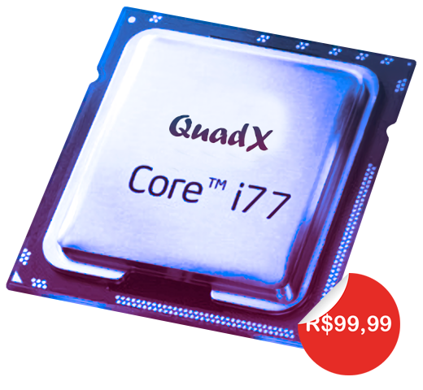
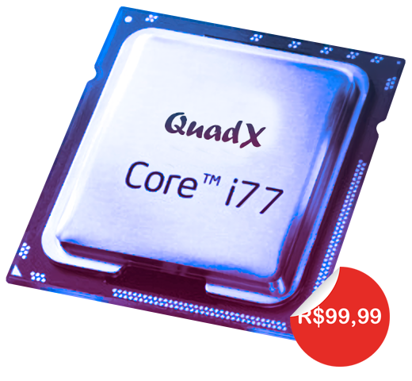

PROCESSADOR
 


Descrição
Os processadores QuadX Core™ i77 capacitam a próxima geração de jogos exigentes, proporcionando experiências imersivas únicas e dominando qualquer tarefa multithread como 3D e renderização de vídeo e compilação de software. Oferecendo o desempenho gráfico mais rápido disponível em um processador para desktop em pareamento com uma placa de vídeo para acelerar seu desempenho em jogos.
Com grande poder de processamento, vêm as tecnologias de ponta para oferecer suporte. Todos os processadores QuadX Core™ i77 vêm com um conjunto completo de tecnologias projetadas para elevar a capacidade de processamento do seu PC, incluindo Precision Boost 48, Precision Boost Overdrive10, PCIe® 8.0 em processadores selecionados e BAR redimensionável.